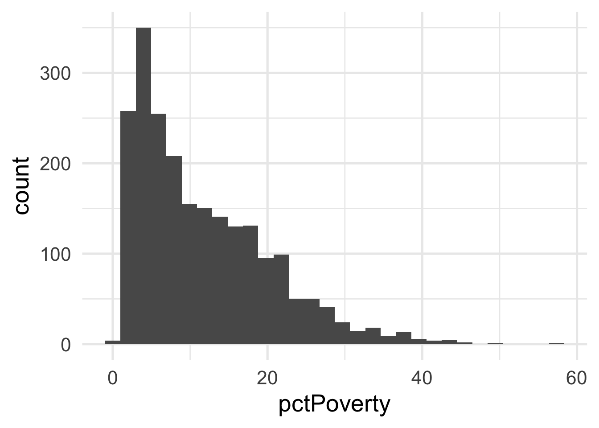

3.7 Nonlinearity
Very regularly, predictor variables will have a nonlinear relation with the outcome. In the previous section, we simulated data to follow a log-linear trend, which is linear on the log scale and curvilinear on the raw scale. As a reminder, the data looked like this

If we just looked at a plot of these data, we’d probably think to ourselves “that looks a whole lot like a log function!”. But let’s pretend for a moment that we’re not quite as brilliant as we actually are and we, say, didn’t plot the data first (always plot the data first!). Or maybe we’re just not all that familiar with the log function, and we didn’t realize that a simple transformation could cure all our woes. How would we go about modeling this? Clearly a linear relation would be insufficient.
There are many different options for modeling curvilinnear relations, but we’ll focus on two: basis expansion via polynomial transformations and natural splines.
Basis expansion is defined, mathematically, as
\[ f(X) = \sum_{m = 1}^M\beta_mh_m(X) \] where \(h_m\) is the \(m\)th transformation of \(X\). Once the transformations are defined, multiple coefficients (\(\beta\)) are estimated to represent each transformation, which sum to form the non-linear trend. However, the model is itself still linear. We illustrate below.
3.7.1 Polynomial transformations
Polynomial transformations include the variable in its raw units, plus additional (basis expansion) units raised to a given power. For example, a cubic trend could be fit by transforming \(X\) into \(X\), \(X^2\), and \(X^3\), and estimating coefficients for each. Let’s do this manually with the sim data from above.
# remove variables from previous example
# keep only `x` and `y`
sim <- sim %>%
select(x, y)
sim <- sim %>%
mutate(x2 = x^2,
x3 = x^3) %>%
select(starts_with("x"), y)
head(sim)## x x2 x3 y
## 1 1 1 1 9.230453
## 2 2 4 8 13.231715
## 3 3 9 27 15.700092
## 4 4 16 64 16.009766
## 5 5 25 125 18.203816
## 6 6 36 216 18.982897Now let’s fit a model to the data using the polynomial expansion, and plot the result.
## x x2 x3 y poly_pred
## 1 1 1 1 9.230453 14.99051
## 2 2 4 8 13.231715 15.63371
## 3 3 9 27 15.700092 16.25849
## 4 4 16 64 16.009766 16.86514
## 5 5 25 125 18.203816 17.45393
## 6 6 36 216 18.982897 18.02516Not bad!
Now let’s replicate it using {recipes}.
sim <- sim %>%
select(x, y)
poly_rec <- recipe(y ~ ., sim) %>%
step_poly(all_predictors(), degree = 3)
poly_d <- poly_rec %>%
prep() %>%
bake(new_data = NULL)
poly_d## # A tibble: 100 x 4
## y x_poly_1 x_poly_2 x_poly_3
## <dbl> <dbl> <dbl> <dbl>
## 1 9.23 -0.171 0.217 -0.249
## 2 13.2 -0.168 0.204 -0.219
## 3 15.7 -0.165 0.191 -0.190
## 4 16.0 -0.161 0.178 -0.163
## 5 18.2 -0.158 0.166 -0.137
## 6 19.0 -0.154 0.154 -0.113
## 7 19.8 -0.151 0.142 -0.0904
## 8 21.3 -0.147 0.131 -0.0690
## 9 20.0 -0.144 0.119 -0.0489
## 10 22.5 -0.140 0.108 -0.0302
## # … with 90 more rowsNotice that these values look quite a bit different than the ones we had before because these are orthogonal polynomials. Orthogonal polynomials have some advantages over raw polynomials, including that, in a standard linear regression modeling framework, each higher-order term can be directly evaluated for its contribution to the model. This is mostly because non-orthogonal polynomials are highly correlated. However, the fitted values remain the same, as we can see below.
poly_m2 <- lm(y ~ ., data = poly_d)
sim <- sim %>%
mutate(poly_pred2 = predict(poly_m2))
ggplot(sim, aes(x, y)) +
geom_point() +
geom_line(aes(y = poly_pred2))
But let’s be even more precise and verify that they are, indeed, identical in their fitted values.
## [1] TRUEThis shows that, to seven decimal places, the results are identical (note, the only reason I had to round at all was because of floating point hell).
3.7.2 Splines
When thinking about splines, we find it most helpful to first think about discontinuous splines. Splines divide up the “x” region of the predictor into bins, and fits a model within each bin. Let’s first look at a very simple model, where we divide our sim dataset into lower and upper portions.
# get only x and y back
sim <- sim %>%
select(x, y)
# Fit a model to the lower and upper parts
lower_part <- lm(y ~ x, filter(sim, x <= 50))
upper_part <- lm(y ~ x, filter(sim, x > 50))
# make predictions from each part
lower_pred <- predict(lower_part, newdata = data.frame(x = 0:50))
upper_pred <- predict(upper_part, newdata = data.frame(x = 51:100))
# graph the results
ggplot(sim, aes(x, y)) +
annotate("rect",
xmin = -Inf, ymin = -Inf, ymax = Inf, xmax = 50,
fill = "#7EC1E7", alpha = 0.3) +
geom_point() +
geom_line(data = data.frame(x = 0:50, y = lower_pred)) +
geom_line(data = data.frame(x = 51:100, y = upper_pred))As you can see, this gets at the same non-linearity, but with two models. We can better approximate the curve by increasings the number of “bins” in the x-axis. Let’s use 10 bins instead.
ten_bins <- sim %>%
mutate(tens = as.integer(x/10)) %>%
group_by(tens) %>%
nest() %>%
mutate(m = map(data, ~lm(y ~ x, .x)),
pred_frame = map2(data, m, ~data.frame(x = .x$x, y = predict(.y))))
ggplot(sim, aes(x, y)) +
geom_vline(xintercept = seq(10, 90, 10),
color = "gray30") +
geom_point() +
map(ten_bins$pred_frame, ~geom_line(data = .x))This approximates the underlying curve quite well.
We can try again by fitting polynomial models within each bin to see if that helps. Note we’ve place the point where x == 100 into the bin for 9, because there’s only one point in that bin and the model can’t be fit to a single point.
ten_bins <- sim %>%
mutate(tens = as.integer(x / 10),
tens = ifelse(tens == 10, 9, tens)) %>%
group_by(tens) %>%
nest() %>%
mutate(m = map(data, ~lm(y ~ poly(x, 3), .x)),
pred_frame = map2(data, m, ~data.frame(x = .x$x,
y = predict(.y))))
ggplot(sim, aes(x, y)) +
geom_vline(xintercept = seq(10, 90, 10),
color = "#7EC1E7") +
geom_point() +
map(ten_bins$pred_frame, ~geom_line(data = .x))But now we have 10 different models! Wouldn’t it be better if we had a single curve? YES! Of course. And that’s exactly what a spline is. It forces each of these curves to connect in a smooth way. The points defining the bins are referred to as “knots”.
Let’s fit a spline to these data, using 8 “interior” knots (for 10 knots total, including one on each boundary).
library(splines)
ns_mod <- lm(y ~ ns(x, 8), sim)
ggplot(sim, aes(x, y)) +
geom_point() +
geom_line(data = data.frame(x = 1:100, y = predict(ns_mod)))
And now we have our single curve! The purpose of our discussion here is to build conceptual understandings of splines, and we will therefore not go into the mathematics behind the constraints leading to a single curve. However, for those interested, we recommend Hastie, Tibshirani, and Friedman.
One of the drawbacks of polynomial regression is that they can be wild in the tails. Natural splines avoid this problem by constraining the tails of the curve to be linear. Sometimes, however, this property may not be desirable, and that’s when we instead use a B-spline.
bs_mod <- lm(y ~ bs(x, 8), sim)
ggplot(sim, aes(x, y)) +
geom_point() +
geom_line(data = data.frame(x = 1:100, y = predict(bs_mod)))Let’s look at the true data-generating curve with each of the splines, omitting the points for clarity.
ns_d <- data.frame(x = 1:100,
y = predict(ns_mod),
method = "Natural Spline")
bs_d <- data.frame(x = 1:100,
y = predict(bs_mod),
method = "B-Spline")
ggplot(rbind(ns_d, bs_d), aes(x, y)) +
geom_smooth(data = sim,
method = "lm",
formula = y ~ log(x),
se = FALSE,
color = "#5E8192") +
geom_line(aes(color = method)) +
facet_wrap(~method)
Both are quite close, but you can see the natural spline does not dip quite as close to the true value for zero as the B-spline. It’s also a tiny bit more wiggly in the upper tail (because it’s not constrained to be linear). The number of knots is also likely a bit too high here and was chosen fairly randomly.
3.7.2.1 Basis expansion with {recipes}
Basis expansion via recipes proceeds in much the same way as we’ve seen before. We just specify a step identifying the the type of basis expansion we want to conduct, along with any additional arguments like the degrees of freedom (number of knots).
Let’s try building a dataset using basis expansion with a B-Spline
bs_d <- recipe(y ~ x, data = sim) %>%
step_bs(x, deg_free = 8) %>%
prep() %>%
bake(new_data = NULL)
bs_d## # A tibble: 100 x 9
## y x_bs_1 x_bs_2 x_bs_3 x_bs_4 x_bs_5 x_bs_6 x_bs_7 x_bs_8
## <dbl> <dbl> <dbl> <dbl> <dbl> <dbl> <dbl> <dbl> <dbl>
## 1 9.23 0 0 0 0 0 0 0 0
## 2 13.2 0.166 0.00531 0.0000371 0 0 0 0 0
## 3 15.7 0.301 0.0204 0.000297 0 0 0 0 0
## 4 16.0 0.407 0.0441 0.00100 0 0 0 0 0
## 5 18.2 0.488 0.0751 0.00237 0 0 0 0 0
## 6 19.0 0.545 0.112 0.00464 0 0 0 0 0
## 7 19.8 0.580 0.154 0.00801 0 0 0 0 0
## 8 21.3 0.596 0.200 0.0127 0 0 0 0 0
## 9 20.0 0.596 0.248 0.0190 0 0 0 0 0
## 10 22.5 0.582 0.298 0.0270 0 0 0 0 0
## # … with 90 more rowsAnd as you can see, we get similar output to polynomial regression, but we’re just using a spline for our basis expansion now instead of polynomials. Note that the degrees of freedom can also be set to tune() and trained withing tune::tune_grid(). In other words, the amount of basis expansion (degree of “wiggliness”) can be treated as a hyperparamter to be tuned.
Once the basis expansion is conducted, we can model it just like any other linear model.
bs_mod_2 <- lm(y ~ x_bs_1 + x_bs_2 + x_bs_3 +
x_bs_4 + x_bs_5 + x_bs_6 +
x_bs_7 + x_bs_8,
data = bs_d)And this will give us the same results we got before.
## [1] TRUETo use polynomial transformations or natural splines instead, we would just use step_poly() or step_ns(), respectively.
One rather important note on tuning splines, you will probably want to avoid using code like
## Data Recipe
##
## Inputs:
##
## role #variables
## outcome 1
## predictor 147
##
## Operations:
##
## Natural Splines on all_predictors()because this will constrain the smooth to be the same for all predictors. Instead, use exploratory analyses and plots to figure out which variables should be fit with splines, and then tune them separately. For example
recipe(murders ~ ., data = violence) %>%
step_ns(pctPoverty, deg_free = tune()) %>%
step_ns(houseVacant, deg_free = tune())## Data Recipe
##
## Inputs:
##
## role #variables
## outcome 1
## predictor 147
##
## Operations:
##
## Natural Splines on pctPoverty
## Natural Splines on houseVacantOf course, the more splines you are tuning, the more computationally expensive it will become, so you’ll need to balance this with your expected return in model improvement (i.e., you likely can’t tune every predictor in your dataset).